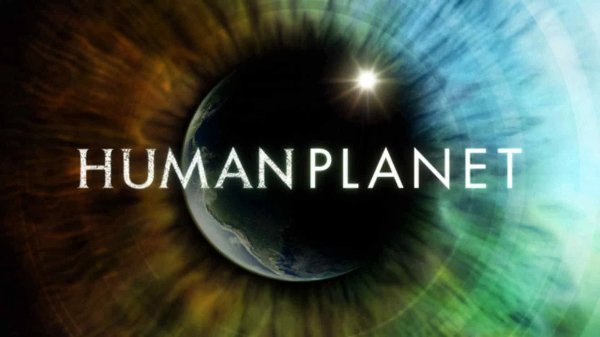

BBC Natural History Unit tarafından hazırlanan ve 2011'de yayımlanan sekiz bölümlük Human Planet, insan yaşamını doğa tarihinin bir parçası olarak ele alıyor. John Hurt'ün anlatımıyla seri; çöller, ormanlar, kutup bölgeleri, dağlar, okyanuslar ve şehirler gibi farklı ortamlarda insanların gündelik hayatlarını ve çevre koşullarına uyumlarını inceliyor.
Her bölüm, belirli bir habitatta yaşayan toplulukların deneyimlerine odaklanıyor. Böylece seri yalnızca uzak ve etkileyici manzaraları göstermiyor; iklimin, coğrafyanın ve doğal kaynakların çalışma, barınma, beslenme ve toplumsal yaşamı nasıl etkileyebildiğini de izleyiciye düşündürüyor.
Serinin temel fikri, insan ile doğayı birbirinden kopuk iki dünya gibi görmemek. Farklı toplulukların çevreleriyle kurduğu ilişkiler, insanın uyum yeteneğini ve yaşam biçimlerinin çeşitliliğini görünür kılıyor. Ancak BBC daha sonra bazı sahnelerin gerçeği hatalı veya yanıltıcı biçimde yansıttığını kabul etti ve seri dağıtımdan çekildi. Bu nedenle güçlü görüntüleri izlerken anlatılan olayların sunuluş biçimini de eleştirel değerlendirmek gerekir.